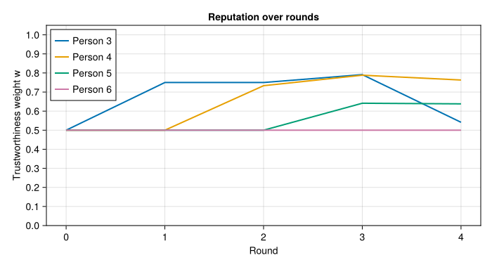

@kwdef mutable struct Statement
id :: Int
endorsers :: Vector{Int}
p_true :: Float64 = 0.0
end
struct Observation
validator :: Int
statement :: Int
confirmed :: Bool
end
struct ReputationGraph
trusted :: Set{Int}
alpha :: Vector{Float64}
beta :: Vector{Float64}
alpha0 :: Vector{Float64}
beta0 :: Vector{Float64}
obs :: Vector{Observation}
statements :: Vector{Statement}
end
function ReputationGraph(n::Int, trusted::Set{Int};
alpha0::Float64 = 1.0, beta0::Float64 = 1.0)
ReputationGraph(
trusted,
fill(alpha0, n), fill(beta0, n),
fill(alpha0, n), fill(beta0, n),
Observation[], Statement[]
)
end;How should you update your beliefs about whether a claim is true when the person telling you might be lying — and the people vouching for them might also be lying? This post develops a fully Bayesian answer, starting from a small trusted set and propagating credibility outward through a network of uncertain validators. We derive a clean conjugate update rule, show how it extends recursively, and implement the resulting fixed-point system in Julia.
The Problem
Suppose you are trying to assess a stream of claims made by various people. You have a small trusted set \(T\) of individuals you know to be perfectly honest — journalists whose work you have verified, domain experts you have met in person, whatever the context warrants. Everyone outside \(T\) may tell the truth with some unknown probability.
Formally, assign each person \(i\) a truth-telling probability \(\theta_i \in [0,1]\). For members of \(T\) we fix \(\theta_i = 1\). For everyone else, \(\theta_i\) is a random variable we want to infer.
A natural question is: given that person \(i\) made a claim, what is the probability it is true? If \(i\) is truthful, the claim reflects their belief; if not, it is noise. So \(P(\text{claim is true}) \geq \theta_i\). If several people endorse the claim, the best endorser gives the tightest bound:
\[P(\text{claim is true}) \geq \theta_{i^*}, \qquad i^* = \arg\max_{i \in \text{endorsers}} \theta_i.\]
Since \(\theta_{i^*}\) is a random variable, we take expectations. Because \(\max\) is convex, Jensen’s inequality gives \(\mathbb{E}[\max_i \theta_i] \geq \max_i \mathbb{E}[\theta_i]\), so
\[P(\text{claim is true}) \geq \mathbb{E}[\theta_{i^*}] \geq \max_{i \in \text{endorsers}} \mathbb{E}[\theta_i].\]
This makes the expected trustworthiness weight
\[w_i = \mathbb{E}[\theta_i]\]
the central quantity we need to track for each person.
Conjugate Updates from the Trusted Set
Place a Beta prior on each untrusted person’s truth-telling probability:
\[\theta_i \sim \mathrm{Beta}(\alpha_i,\, \beta_i).\]
The Beta-Binomial model is conjugate: each time a member of \(T\) observes person \(i\) making a claim, they either confirm it (a “success” — \(i\) told the truth) or refute it (a “failure” — \(i\) lied). The posterior update is:
\[\text{confirmed:} \quad \alpha_i \leftarrow \alpha_i + 1, \qquad \text{refuted:} \quad \beta_i \leftarrow \beta_i + 1.\]
The posterior mean trustworthiness is then
\[w_i = \mathbb{E}[\theta_i] = \frac{\alpha_i}{\alpha_i + \beta_i}.\]
This is clean and exact — but it requires a member of \(T\) to be present for every observation. In practice, your trusted set is small. We need to propagate trust outward.
Fractional Updates via Uncertain Validators
Now suppose validator \(j \notin T\) has uncertain trustworthiness \(\theta_j \sim \mathrm{Beta}(\alpha_j, \beta_j)\). When \(j\) assesses a claim by \(i\), we do not know whether \(j\)’s report reflects the truth. We handle this with EM, treating report truthfulness as a latent variable.
Latent variable. Write \(\text{obs}_k \in \{0, 1\}\) for the binary outcome of observation \(k\): \(\text{obs}_k = 1\) if validator \(j\) confirmed the claim and \(\text{obs}_k = 0\) if they refuted it. For each observation \(k\), let \(z_k = 1\) if \(j\) reported truthfully and \(z_k = 0\) if \(j\) lied. The complete-data model is a mixture of Bernoullis: a truthful report is a genuine draw from \(\mathrm{Bernoulli}(\theta_i)\), so \(P(\text{obs}_k = 1 \mid z_k = 1) = \theta_i\); a lie is symmetric noise, so \(P(\text{obs}_k = 1 \mid z_k = 0) = \tfrac{1}{2}\) regardless of \(\theta_i\), and hence carries no information about \(i\).
EM via the ELBO. For any model \(p(x, z \mid \theta)\) with latent \(z\) and observed \(x\), importance-sampling the log-marginal with a variational distribution \(q(z)\) and applying Jensen gives the evidence lower bound:
\[\log p(x \mid \theta) \geq \mathbb{E}_{q}[\log p(x, z \mid \theta)] - \mathbb{E}_{q}[\log q(z)] =: \mathcal{L}(q, \theta).\]
The bound is tight when \(q(z) = p(z \mid x, \theta)\), which is the E-step. The M-step then maximises \(\mathcal{L}\) over \(\theta\) with \(q\) fixed. For an exponential family likelihood \(p(x \mid z, \theta) \propto \exp(\eta(\theta)^\top T(x, z))\) with conjugate prior, setting \(\nabla_\theta \mathcal{L} = 0\) gives moment matching: the M-step posterior has the same form as the prior with hyperparameters updated by \(\mathbb{E}_q[T(x, z)]\), the expected sufficient statistics under \(q\).
M-step. For our model the complete-data log-likelihood for \(\theta_i\), treating \(z_k\) as observed, is
\[\ell(\theta_i) = \sum_k z_k \bigl[ \text{obs}_k \log\theta_i + (1-\text{obs}_k)\log(1-\theta_i) \bigr] + \text{const},\]
since only the truthful component (\(z_k = 1\)) carries information about \(\theta_i\); the noise component contributes a constant \(\log\tfrac{1}{2}\). Setting \(q(z_k) = p(z_k \mid \text{obs}_k, \theta)\), the expected sufficient statistics are \(\mathbb{E}[z_k \cdot \text{obs}_k] = \gamma_k \cdot \text{obs}_k\) and \(\mathbb{E}[z_k \cdot (1 - \text{obs}_k)] = \gamma_k \cdot (1 - \text{obs}_k)\), where \(\gamma_k = \mathbb{E}[z_k \mid \text{obs}_k]\). Moment matching against the Beta prior gives:
\[\alpha_i \leftarrow \alpha_i^{(0)} + \sum_{k:\,\text{confirmed}} \gamma_k, \qquad \beta_i \leftarrow \beta_i^{(0)} + \sum_{k:\,\text{refuted}} \gamma_k.\]
The M-step needs only \(\gamma_k\). So the question for the E-step is: what is \(\mathbb{E}[z_k \mid \text{obs}_k]\)?
E-step. By Bayes’ rule, with \(P(z_k = 1) = \theta_j\) and \(P(\text{obs}_k \mid z_k = 0) = \tfrac{1}{2}\):
\[\gamma_k(\theta_i, \theta_j) = \frac{\theta_j \cdot P(\text{obs}_k \mid z_k=1, \theta_i)}{\theta_j \cdot P(\text{obs}_k \mid z_k=1, \theta_i) + (1-\theta_j) \cdot \tfrac{1}{2}},\]
where \(P(\text{obs}_k = 1 \mid z_k = 1, \theta_i) = \theta_i\) and \(P(\text{obs}_k = 0 \mid z_k = 1, \theta_i) = 1 - \theta_i\). Since \(\theta_j \leq 1\), the denominator satisfies
\[\theta_j \cdot P(\text{obs}_k \mid z_k=1, \theta_i) + (1-\theta_j)/2 \leq P(\text{obs}_k \mid z_k=1, \theta_i) + (1-\theta_j)/2,\]
and because \(P(\text{obs}_k \mid z_k=1, \theta_i) \leq 1\), we have \(\gamma_k \geq \theta_j\) whenever the observed outcome is consistent with truthful reporting (i.e. \(P(\text{obs}_k \mid z_k=1, \theta_i) > \tfrac{1}{2}\)). So \(\theta_j\) is a conservative lower bound on the true responsibility \(\gamma_k\): using it in the M-step under-credits each observation rather than over-crediting it. Substituting \(w_j = \mathbb{E}[\theta_j]\) as a point estimate for \(\theta_j\), the fractional update becomes:
\[\alpha_i \leftarrow \alpha_i^{(0)} + \sum_{k:\,\text{confirmed}} w_{j_k}, \qquad \beta_i \leftarrow \beta_i^{(0)} + \sum_{k:\,\text{refuted}} w_{j_k}.\]
When \(w_j = 1\) this recovers the exact integer update from the previous section. When \(j\) is completely unknown (\(w_j = 0.5\) from a uniform prior), each observation contributes half a count.
The Fixed Point
The update rule makes \(\alpha_i\) and \(\beta_i\) functions of the weights \(\{w_j\}\), which are themselves functions of \(\{\alpha_j, \beta_j\}\). Writing this out explicitly, with \(\alpha_i^{(0)}, \beta_i^{(0)}\) as prior hyperparameters and \(\mathcal{O}\) as the set of all observations:
\[\alpha_i = \alpha_i^{(0)} + \sum_{\substack{(j,\, s,\, \text{confirmed}) \\ \in\, \mathcal{O},\; i \in \text{endorsers}(s)}} w_j, \qquad \beta_i = \beta_i^{(0)} + \sum_{\substack{(j,\, s,\, \text{refuted}) \\ \in\, \mathcal{O},\; i \in \text{endorsers}(s)}} w_j,\]
where \(s\) ranges over statements and \(\text{endorsers}(s)\) is the set of people who made or endorsed statement \(s\). The weights then feed back:
\[w_i = \frac{\alpha_i}{\alpha_i + \beta_i}.\]
This is a fixed-point equation \(w = F(w)\) on \([0,1]^n\). The map \(F\) is monotone (more trustworthy validators \(\Rightarrow\) higher weights), and the trusted boundary \(w_T = \mathbf{1}\) is held fixed. By Tarski’s fixed-point theorem a solution exists. In practice we find it by damped iteration:
\[w^{(t+1)} = (1 - \lambda)\, w^{(t)} + \lambda\, F(w^{(t)}), \qquad \lambda \in (0, 1],\]
re-clamping \(w_T = 1\) after each step. For acyclic graphs (trust flowing outward from \(T\)) any \(\lambda\) converges; for graphs with mutual-validation cycles the damping ensures contraction.
Julia Implementation
The state of the system lives in a single ReputationGraph struct holding the Beta parameters \((\alpha, \beta)\), their fixed priors \((\alpha_0, \beta_0)\), the trusted set, and the accumulated observations and statements.
The weight vector \(w_i = \mathbb{E}[\theta_i] = \alpha_i / (\alpha_i + \beta_i)\) is computed by a single broadcast, with trusted nodes clamped to 1 afterwards.
function weights(g::ReputationGraph) :: Vector{Float64}
w = g.alpha ./ (g.alpha .+ g.beta)
w[collect(g.trusted)] .= 1.0
return w
end;recompute! is the inner body of the fixed-point iteration. It resets \(\alpha\) and \(\beta\) to their priors, then accumulates the conservative responsibility weights from every observation: each confirmation adds \(w_j\) to \(\alpha\) for every endorser of the statement, each refutation adds \(w_j\) to \(\beta\). It then refreshes p_true for every statement as \(\max_{i \in E(s)} w_i\).
function recompute!(g::ReputationGraph, w::Vector{Float64})
g.alpha .= g.alpha0
g.beta .= g.beta0
for ob in g.obs
stmt = g.statements[ob.statement]
target = ob.confirmed ? g.alpha : g.beta
target[stmt.endorsers] .+= w[ob.validator]
end
for stmt in g.statements
stmt.p_true = maximum(w[stmt.endorsers], init=0.0)
end
end;solve_fixedpoint! warm-starts from the current weight vector — so a single new observation requires only a few iterations — and applies the damped update \(w \leftarrow (1-\lambda) w + \lambda F(w)\) until \(\|w_\text{new} - w\|_\infty
< \varepsilon\). The trusted boundary is re-clamped after each damp step to prevent it from drifting. A final call to recompute! ensures that g.alpha, g.beta, and all p_true fields are exactly consistent with the converged \(w^*\) before the function returns.
function solve_fixedpoint!(g::ReputationGraph;
tol :: Float64 = 1e-10,
max_iter :: Int = 500,
lambda :: Float64 = 0.6) :: Vector{Float64}
w = weights(g)
for iter in 1:max_iter
recompute!(g, w)
w_new = weights(g)
delta = maximum(abs.(w_new .- w))
w .= (1.0 - lambda) .* w .+ lambda .* w_new
w[collect(g.trusted)] .= 1.0
delta < tol && break
end
recompute!(g, w)
return w
end;The public API exposes two mutating operations. add_statement! registers a new statement and immediately re-solves so that p_true is initialised from the current weights. add_observation! appends a single observation and re-solves, returning the updated weight vector and statement list together so callers have a consistent snapshot.
function add_statement!(g::ReputationGraph, endorsers::Vector{Int}) :: Int
id = length(g.statements) + 1
push!(g.statements, Statement(; id, endorsers))
solve_fixedpoint!(g)
return id
end
function add_observation!(g::ReputationGraph,
validator::Int, statement_id::Int, confirmed::Bool;
kwargs...) :: Tuple{Vector{Float64}, Vector{Statement}}
push!(g.obs, Observation(validator, statement_id, confirmed))
w = solve_fixedpoint!(g; kwargs...)
return w, g.statements
end;Worked Example
We set up six people with persons 1 and 2 in the trusted set and register four statements.
Setup. Initialise the graph and register statements.
trusted = Set([1, 2])
g = ReputationGraph(6, trusted; alpha0 = 1.0, beta0 = 1.0)
s1 = add_statement!(g, [3])
s2 = add_statement!(g, [4])
s3 = add_statement!(g, [5])
s4 = add_statement!(g, [3, 4])
history = [weights(g)]1-element Vector{Vector{Float64}}:
[1.0, 1.0, 0.5, 0.5, 0.5, 0.5]Round 1. Both trusted nodes assess person 3’s claim: person 1 confirms, person 2 also confirms. Person 3’s weight rises from the \(\mathrm{Beta}(1,1)\) prior.
add_observation!(g, 1, s1, true)
add_observation!(g, 2, s1, true)
push!(history, weights(g))2-element Vector{Vector{Float64}}:
[1.0, 1.0, 0.5, 0.5, 0.5, 0.5]
[1.0, 1.0, 0.75, 0.5, 0.5, 0.5]Round 2. Person 3, now reputable, confirms person 4’s claim. Persons 5 and 6 also weigh in on person 4’s claim, providing independent signal.
add_observation!(g, 3, s2, true)
add_observation!(g, 5, s2, true)
add_observation!(g, 6, s2, true)
push!(history, weights(g))3-element Vector{Vector{Float64}}:
[1.0, 1.0, 0.5, 0.5, 0.5, 0.5]
[1.0, 1.0, 0.75, 0.5, 0.5, 0.5]
[1.0, 1.0, 0.75, 0.7333333333333333, 0.5, 0.5]Round 3. Person 4 confirms person 5’s claim; person 3 confirms the joint claim \(s_4\).
add_observation!(g, 4, s3, true)
add_observation!(g, 3, s4, true)
push!(history, weights(g))4-element Vector{Vector{Float64}}:
[1.0, 1.0, 0.5, 0.5, 0.5, 0.5]
[1.0, 1.0, 0.75, 0.5, 0.5, 0.5]
[1.0, 1.0, 0.75, 0.7333333333333333, 0.5, 0.5]
[1.0, 1.0, 0.7912878474777408, 0.7883121098129494, 0.6413600914731654, 0.5]Round 4. Trusted node 1 refutes person 3’s claim and trusted node 2 also refutes it. Person 3’s weight falls, dragging down person 4 and the lower bound on \(s_4\) with it.
add_observation!(g, 1, s1, false)
add_observation!(g, 2, s1, false)
push!(history, weights(g))5-element Vector{Vector{Float64}}:
[1.0, 1.0, 0.5, 0.5, 0.5, 0.5]
[1.0, 1.0, 0.75, 0.5, 0.5, 0.5]
[1.0, 1.0, 0.75, 0.7333333333333333, 0.5, 0.5]
[1.0, 1.0, 0.7912878474777408, 0.7883121098129494, 0.6413600914731654, 0.5]
[1.0, 1.0, 0.5413812651499745, 0.7630807650255474, 0.6380851357497672, 0.5]Plot. The chart below shows \(w_i\) for each participant after each round. Trusted persons 1 and 2 are fixed at 1 throughout and are omitted for clarity.
using CairoMakie
CairoMakie.enable_only_mime!("png")
rounds = 0:length(history)-1
fig = Figure(size = (700, 380))
ax = Axis(fig[1, 1];
xlabel = "Round",
ylabel = "Trustworthiness weight w",
title = "Reputation over rounds",
xticks = rounds,
yticks = 0.0:0.1:1.0,
limits = (nothing, (0.0, 1.05)))
for person in 3:6
ws = [h[person] for h in history]
lines!(ax, rounds, ws; linewidth = 2, label = "Person $person")
end
axislegend(ax; position = :lt)
fig
The plot makes the propagation visible: persons 3–5 rise as trust flows outward from \(T\), and then persons 3 and 4 fall in round 4 as both trusted nodes contradict person 3’s earlier claim.
A Real-World Instantiation: PGP Keys and the Open World
The model so far has assumed a closed world — a fixed population of \(n\) known people, each with a pre-allocated slot in the \(\alpha\) and \(\beta\) vectors. In practice, new actors appear continuously, statements are pseudonymous, and you cannot know in advance who will speak. This section sketches how to ground the abstract model in something deployable, using PGP keys to establish \(T\) and extending naturally to an open world.
Identities as Public Keys
Replace integer node indices with PGP public key fingerprints. A person in the model is now a key, and a statement is any content-addressed artifact that has been signed with that key. This gives us something the integer model lacked: unforgeable authorship — an observation cannot be forged after the fact without breaking the underlying elliptic curve or RSA scheme.
Establishing \(T\) via the PGP Web of Trust
The trusted set \(T\) does not fall from the sky. PGP already has a decades-old mechanism for bootstrapping trust called the web of trust: participants sign each other’s public keys to attest that they have verified the real-world identity behind the key. The classical PGP trust levels map naturally onto our model:
| PGP trust level | Interpretation in our model |
|---|---|
| Ultimate (your own key) | Member of \(T\) |
| Full (personally verified) | Also a member of \(T\) |
| Marginal (partially trusted) | Initialise with a weak prior, e.g. \(\mathrm{Beta}(2, 1)\) |
| Unknown / untrusted | Default prior \(\mathrm{Beta}(1, 1)\) |
Keys you have personally verified at a key signing party, or through out-of-band fingerprint exchange, enter \(T\) directly. Keys attested by PGP’s classic “three marginal signers” heuristic can instead seed a \(\mathrm{Beta}(10, 1)\) prior rather than being fixed at 1, which is more honest about residual uncertainty.
The Bayesian model then takes over from where PGP stops. PGP’s web of trust is binary and static — a key is either trusted enough or it is not, and trust does not degrade when a key holder is later found to have lied. Our model is continuous and dynamic: \(\theta_i\) drifts down whenever a trusted source contradicts a signed statement by key \(i\), regardless of how that key entered the graph.
Open-World Dynamics and Revocation
In the open world, new keys appear with every new statement. The graph grows lazily: a previously unseen fingerprint gets a fresh \(\mathrm{Beta}(\alpha_0, \beta_0)\) node, so its initial weight is \(w = 0.5\) under a uniform prior and it contributes half a count to anything it endorses until validators speak.
Key revocation maps to a hard deletion: filter g.obs to remove every observation made by the revoked fingerprint, then re-solve the fixed point. All downstream weights that depended on that validator’s fractional counts are automatically corrected by the re-solve.
Concrete Implementation
An assertion is a cleartext claim together with a detached PGP signature over its content. The statement identifier is the hex-encoded SHA-256 digest of the content — a globally unambiguous content address.
using SHA
struct SignedAssertion
content :: String
signature :: String
end
statement_id(a::SignedAssertion) = bytes2hex(sha256(a.content));Signature verification shells out to gpg --status-fd 1. The relevant tokens are VALIDSIG (which carries the full key fingerprint) and one of TRUST_ULTIMATE, TRUST_FULLY, TRUST_MARGINAL, or TRUST_UNDEFINED, which reflect the local owner-trust database — the same web of trust the user already maintains with gpg --edit-key. On failure, or if the signature cannot be verified against any key in the keyring, gpg_verify returns nothing.
@enum Trust Unknown Marginal Full
function gpg_verify(content::String, signature::String
) :: Union{Nothing, Tuple{String, Trust}}
mktempdir() do dir
sig_path = joinpath(dir, "sig.asc")
write(sig_path, signature)
result = readchomp(pipeline(`gpg --status-fd 1 --verify $sig_path -`,
stdin=IOBuffer(content)))
lines = split(result, '\n')
vsig_line = findfirst(l -> occursin(" VALIDSIG ", l), lines)
trust_line = findfirst(l -> occursin(" TRUST_", l), lines)
vsig_line === nothing && return nothing
fingerprint = split(lines[vsig_line])[3]
trust_tag = trust_line !== nothing ? split(lines[trust_line])[2] : ""
trust = trust_tag == "TRUST_MARGINAL" ? Marginal :
trust_tag ∈ ("TRUST_FULLY", "TRUST_ULTIMATE") ? Full :
Unknown
(fingerprint, trust)
end
end;The three trust levels seed the Beta prior for a newly seen key. Full trust (GPG’s TRUST_FULLY and TRUST_ULTIMATE) places the node directly in \(T\); marginal trust biases the prior towards truthfulness; unknown keys start at the uniform \(\mathrm{Beta}(1,1)\).
PGPReputationGraph wraps the inner ReputationGraph with two dictionaries that map cryptographic identifiers — key fingerprints and content hashes — to the integer indices used by the solver. The graph is seeded with a single node for your own key, which is immediately placed in \(T\).
struct PGPReputationGraph
g :: ReputationGraph
fingerprint_index :: Dict{String, Int}
statement_index :: Dict{String, Int}
end
function PGPReputationGraph(own_fingerprint::String)
g = ReputationGraph(1, Set([1]); alpha0 = 1.0, beta0 = 1.0)
pg = PGPReputationGraph(g, Dict{String,Int}(), Dict{String,Int}())
pg.fingerprint_index[own_fingerprint] = 1
pg
end;New fingerprints and content hashes are registered lazily on first encounter. For fingerprints, the PGP trust level at the moment of first contact determines the prior; subsequent observations update it from there. For statements, if the same content hash arrives from a second signer, that signer is added to the endorser list of the existing Statement node rather than creating a duplicate.
function get_or_create_node!(pg::PGPReputationGraph,
fingerprint::String,
trust::Trust) :: Int
haskey(pg.fingerprint_index, fingerprint) &&
return pg.fingerprint_index[fingerprint]
α0, β0 = trust == Marginal ? (2.0, 1.0) : (1.0, 1.0)
g = pg.g
push!(g.alpha, α0); push!(g.alpha0, α0)
push!(g.beta, β0); push!(g.beta0, β0)
idx = length(g.alpha)
pg.fingerprint_index[fingerprint] = idx
trust == Full && push!(g.trusted, idx)
idx
end
function get_or_create_statement!(pg::PGPReputationGraph,
content_hash::String,
endorser_idx::Int) :: Int
if haskey(pg.statement_index, content_hash)
sid = pg.statement_index[content_hash]
stmt = pg.g.statements[sid]
endorser_idx ∉ stmt.endorsers && push!(stmt.endorsers, endorser_idx)
return sid
end
sid = add_statement!(pg.g, [endorser_idx])
pg.statement_index[content_hash] = sid
sid
end;process_assertions! is the main entry point. It takes a batch of signed assertions and executes four steps in order: verify each signature and discard failures; look up or allocate nodes and statements; append all new observations to the graph; then re-solve the fixed point exactly once for the whole batch. The function returns a (content_hash, p_true_lower_bound) pair for each assertion whose signature was valid.
function process_assertions!(pg::PGPReputationGraph,
assertions::Vector{SignedAssertion}
) :: Vector{Tuple{String, Float64}}
verified = Tuple{SignedAssertion, String, Trust}[]
for assertion in assertions
result = gpg_verify(assertion.content, assertion.signature)
result === nothing && continue
push!(verified, (assertion, result...))
end
isempty(verified) && return Tuple{String,Float64}[]
for (assertion, fingerprint, trust) in verified
validator_idx = get_or_create_node!(pg, fingerprint, trust)
content_hash = statement_id(assertion)
stmt_id = get_or_create_statement!(pg, content_hash, validator_idx)
push!(pg.g.obs, Observation(validator_idx, stmt_id, true))
end
solve_fixedpoint!(pg.g)
[(statement_id(a), pg.g.statements[pg.statement_index[statement_id(a)]].p_true)
for (a, _, _) in verified]
end;Revocation remains a one-liner: filter the revoked key’s observations out of pg.g.obs and re-solve. All downstream weights that depended on that validator’s fractional counts are corrected automatically.
Signed Observations as a Gossip Protocol
Because every observation is a signed statement, the observation graph itself can be gossiped over a peer-to-peer network. A node receiving a bundle of signed attestations calls process_assertions! locally, verifies each signature against its own keyring, and re-solves its own fixed point. This yields a fully decentralised reputation system: trust is rooted in each participant’s own key and their personally verified \(T\), propagated through the Bayesian fixed point over a cryptographically authenticated observation graph, and updated continuously as new signed attestations arrive from peers.